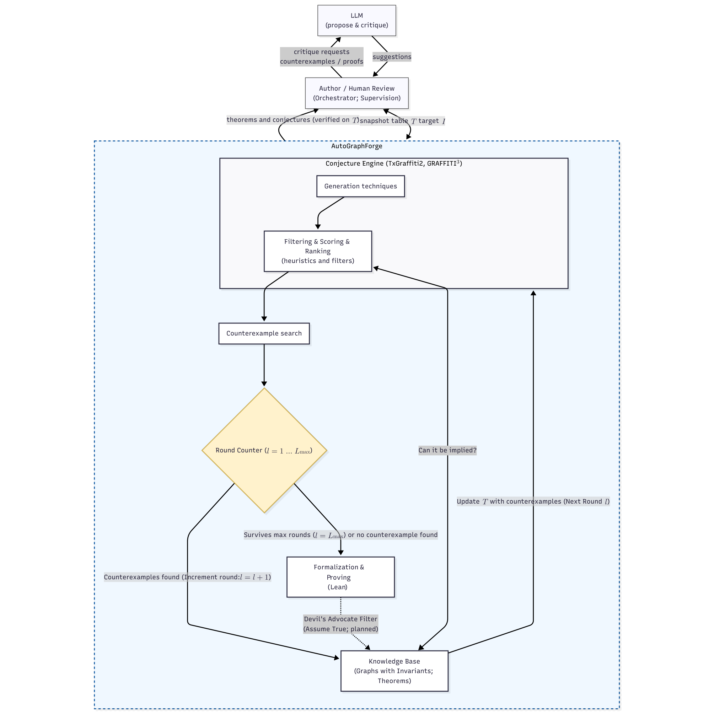

Surviving graph-theory conjectures are deterministically translated into Lean 4 statement skeletons, with candidate proofs kernel-verified against pinned mathlib4 using neural provers.
Abstract
We report on our ongoing project to develop a computational pipeline, AutoGraphForge, for an automated graph-theoretic conjecturing-refuting-formalizing-proving system. Conjecture generation is counterexample-guided and runs in rounds: a Graffiti3 generator proposes conjectures over a small, evolving snapshot table $T$ (initially a few hundred graphs with their computed invariants) that grows only by counterexamples to its own conjectures. A novelty filter of $559$ classical and folklore relations, closed under transitive composition and linear identity substitution, decides via a linear program whether a candidate is already implied by known results. Surviving candidates are tested against a dataset of about $348,000$ graphs, unioning the complete House of Graphs invariant export, the exhaustive census of all connected graphs on at most nine vertices, several extremal families (strongly regular, minimal Ramsey, Cayley, cages, barbells, lollipops, spiders), and random models. Counterexample-search algorithms then attack the remainder. Run for several rounds on an HPC cluster, the loop yields $6,522$ conjectures that survived the refutation dataset, the novelty filter and every active-search run – among them nontrivial relations between the annihilation number and the edge-cover number for bipartite and regular graphs, which we prove by hand. A subsequent formalization and proving stage deterministically translates each surviving conjecture into a Lean 4 statement skeleton; every candidate proof is kernel-verified against a pinned mathlib4 and our custom invariant preamble. This stage integrates two neural provers – DeepSeek-Prover-V2-671B (served with vLLM) and the Lean-specialised OProver-32B – behind the independent kernel check. It is implemented end-to-end and passes initial sanity checks, with the full pipeline currently running on the cluster.
Problem
Automated mathematical discovery in graph theory requires generating conjectures, refuting spurious ones, and rigorously formalizing and proving the survivors. Closing the full conjecture-to-proof loop with formal verification remains an open challenge.
Approach
AutoGraphForge couples a Graffiti3 conjecture generator over an evolving graph invariant table with a novelty filter of 559 known relations and counterexample-search testing against 348,000 graphs. Surviving conjectures are deterministically translated into Lean 4 statement skeletons using a custom invariant preamble. Two neural provers, DeepSeek-Prover-V2-671B and OProver-32B, produce candidate proofs that are kernel-verified against a pinned mathlib4.

Figure 1: The complete AutoGraphForge pipeline. The orchestrator loop (LLM and Human) interacts with the AutoGraphForge and conjecture engine. Surviving conjectures enter a refutation loop managed by a round counter ( l=1\dots L_{\max} ), eventually proceeding to the formalization-and-proving stage if they survive L_{\max} rounds. Conjectures are generated, immediately filtered and sorted with heu
Results
The loop yielded 6,522 conjectures surviving refutation and novelty filtering, including relations between annihilation number and edge-cover number for bipartite and regular graphs proved by hand. The formalization-and-proving stage is implemented and passes sanity checks but has not yet been run on the candidate conjectures.